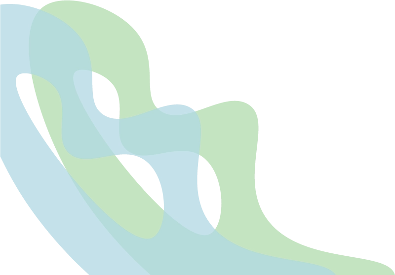
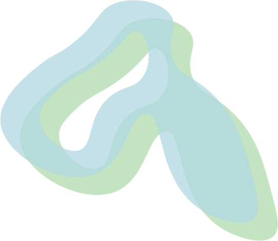
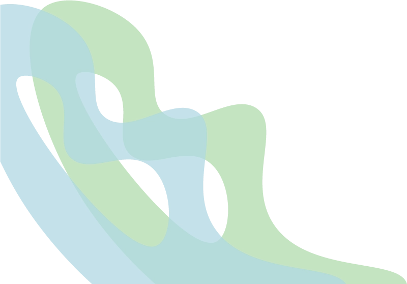
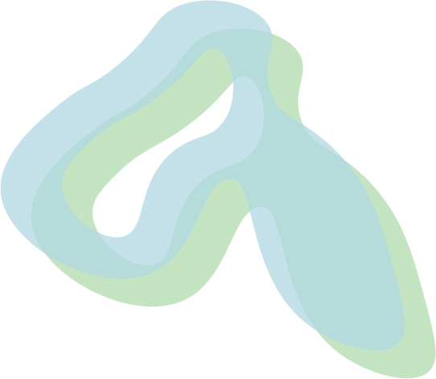

Historien bag
Hos TrøjborgBryg repræsenterer vi et Mikrobryggeri, der dedikerer sig til at skabe festlige oplevelser for unge på en sikker og ansvarlig måde. Vores primære fokus er at tilbyde alkoholfri øl af høj kvalitet, som ikke blot efterligner, men også overgår forventningerne til traditionelle øltyper.
Vi stræber efter at etablere et trygt miljø for unge under fester og arrangementer, hvor det bliver normen at nyde sig selv uden at skulle ty til alkohol.
Vi har specialiseret os i at fremstille alkoholfri øl ved hjælp af avancerede teknikker og nøje udvalgte ingredienser. Interesseret i at vide mere om, hvordan alkoholfri øl laves helt uden alkohol? Vi deler gerne vores ekspertise om processen bag vores alkoholfri ølproduktion og de metoder, der gør det muligt at skabe en autentisk smag uden alkoholindhold.
Den stigende udfordring med alkohol blandt unge i dag er noget, vi tager seriøst. Hos TrøjborgBryg ønsker vi at være en del af løsningen ved at tilbyde et alternativ, der ikke går på kompromis med smag eller feststemning, men som fremmer sikkerhed og sundhed for vores unge generationer.
Vision:
At være førende inden for alkoholfrie alternativer og fremme en festlig kultur uden alkohol, hvor ædruelighed er normen og alkoholfri øl betragtes som en høj kvalitetsoplevelse.
Mission:
At skabe og levere førsteklasses alkoholfri øl, oplyse om fremstillingsprocessen, og gennem vores produkter og engagement fremme en sikker, sund og fornøjelig ædru kultur for unge.


 


